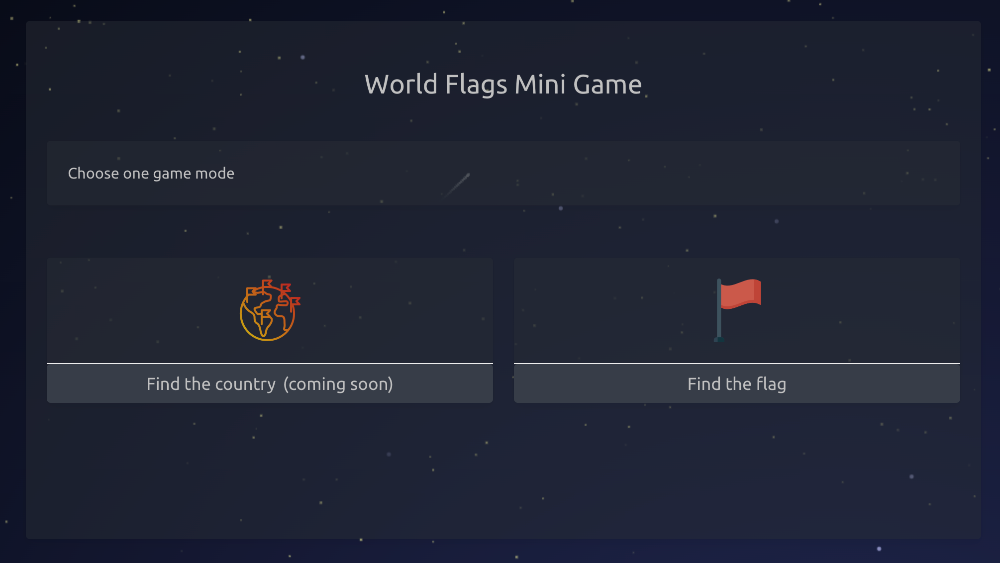
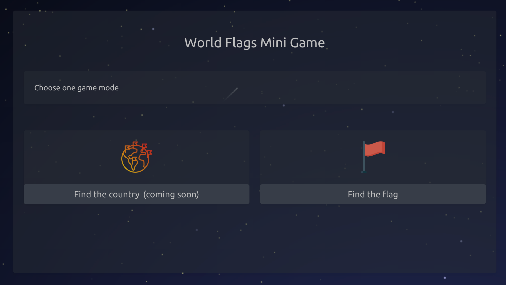
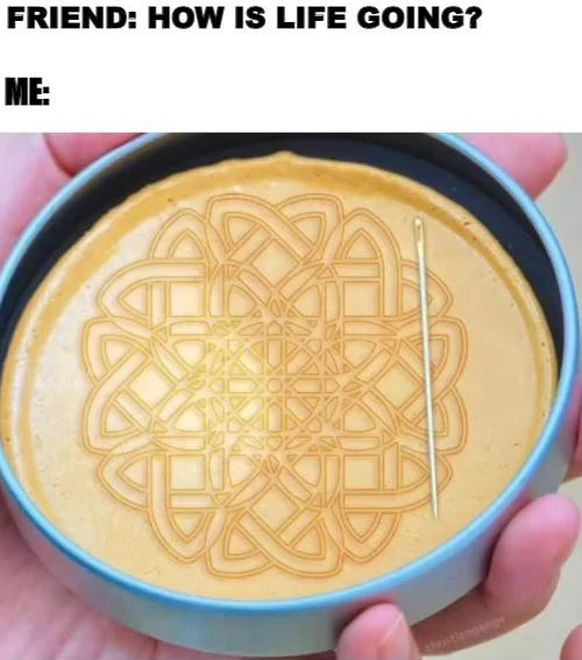

Thử làm mini game vui vẻ với HTML, CSS và JS
Không giống nhiều bạn trẻ khác, mình không có sở thích chơi game mặc dù đang làm việc tại một công ty phát triển game. Ở công ty ngoài việc đóng góp tiếng cười nhiều khi rất là “voo-tree”, mình còn xây dựng hệ thống back-end Back-office dùng để quản lý các tựa game, người chơi và các tính năng có trong game, chứ thật ra hổng có làm game. Game thì có team khác làm.
Ngày xưa, lúc còn học cấp 2, cấp 3 trường làng, mình cũng thử “ra net” chơi FIFA Online, đá PES, Counter-strike, GunBound đủ thứ (trừ Audition). Hihi, mà chắc là do kỹ năng kém, trình “gà” nên chơi toàn thua và bị ăn chửi. Từ đó, cay … nên không chơi game nữa
Mấy nay tự nhiên mình lại nảy ra ý tưởng làm con mini game vui vui để học, giống mấy như game của MiniClip ngày xưa á, cái thời mà game viết bằng Flash còn thịnh hành. Chắc chỉ còn dân 8x, 9x mới biết flash game là gì ^^.
Cùng đọc bài viết về con game đầu tay của mình nha…
Ý tưởng
Ý tưởng game khá là đơn giản được bắt nguồn từ một short video của kênh Street interviews mà mình tình cờ lướt thấy trên Youtube. Người chơi sẽ được xem nhiều hình ảnh quốc kỳ và phải trả lời được tên quốc gia tương ứng.
Từ ý tưởng trên, mình xây dựng hai “mode” chơi cho game
- Tìm hình ảnh của quốc kỳ theo tên quốc gia. (đã có thể chơi được trên game demo ở trên)
- Tìm tên quốc gia theo hình ảnh quốc kỳ. (chưa thực hiện)
 

Các mode chơi khác có thể được xây dựng trong tương lai
- Xác định vị trí của quốc gia trên bản đồ theo tên hoặc hình ảnh quốc kỳ. Việc chơi theo quốc kỳ ở mode này sẽ khó hơn một chút, bởi bạn phải nhớ được tên quốc gia rồi mới chỉ được quốc gia đó nằm ở đâu.
- Đoán tên quốc gia theo hình ảnh quốc kỳ mà không có gợi ý như mode chơi đầu tiên. Mode này sẽ khá thú vị để đi đố người khác như trong video ở trên.
Những thứ mình đã dùng để xây dựng game Flags of World
Game của mình chỉ nằm ở mức độ đơn giản, vui vui, vừa chơi giải trí lại biết thêm một vài kiến thức địa lý về quốc gia, quốc kỳ.
Mình sẽ liệt kê những thứ mình đã sử dụng để viết con game này nhé
HTML, CSS
Phần này chắc chắn không thể thiếu được để xây dựng “mặt tiền” cho game. HTML và CSS không phải là ngôn ngữ lập trình, chúng giúp chúng ta thiết kế dược giao diện nhìn thấy được trên trình duyệt như text (chữ), các nút bấm, quy định về màu sắc, kích thước, vị trí và các chuyển động.
Thư viện CSS mình tận dụng lại luôn thằng Bulma.io đang dùng trên blog.JavaScript (JS)
JS dùng để viết các function xử lý các hành động của người chơi như các nút bấm qua màn, chọn mode, random câu hỏi, tạo các câu trả lời trắc nghiệm, check lựa chọn người dùng có chính xác không để cộng điểm, điều khiển trình phát âm thanh click, chúc mừng khi chọn đúng đáp án, v.v…
Cái này cũng đơn giản, không cần gì cao siêu, chủ yếu để thêm, bớt css class, thay đổi các thuộc tính nhưsrc=của thẻ<img />khi nạp ảnh là cờ chẳng hạn, thêm một vài chỗ dùngsetTimeoutđể canh thời gian chạy kết hợp các hiệu ứng. Gần như chỉ cần biết JS căn bản thì cũng đã đủ dùng.Animation
Hai thư viện mình dùng là:
✅ CSSanimation.io giúp tạo các hoạt cảnh chuyển màn chơi, hiệu ứng xuất hiện và biến mất, …
✅ Animate.css chủ yếu mình dùng 02 hiệu ứng làtadakhi người chơi nhấp vào đáp án đúng, và hiệu ứngwobbykhi nhấp vào một đáp an sai.Các hiệu ứng trời sao, pháo hoa khác
Mình dùng party.js để tạo hiệu ứng trời đầy sao và hiệu ứng “tung bông tung hoa” khi người dùng chọn đúng đáp án.
- Nguồn dữ liệu
Mình không cần tự chuẩn bị câu hỏi về quốc gia hay hình ảnh quốc kỳ, chứ có hơn 200 quốc gia và vùng lãnh thổ mà tự chuẩn bị thì chắc tới mùa quýt mới “release” được. Cụ thể, dữ liệu câu hỏi trong game được lấy từ 02 trang restcountries.com và flagpedia.net. Chân thành cám ơn hai “nhà” trên đã cung cấp miễn phí và đầy đủ dữ liệu để mình sử dụng.
Phần âm thanh trong game thì mình search từ nhiều nguồn miễn phí trên Internet như
pixabay.com và một vài trang nữa không nhớ rõ T.T. Sound effects thì dùng license free ráp vô game cho vui tai thôi chứ nghe rất là “chuối” luôn 🍌.
Kết
Sau vài hôm nghiên cứu và “code lách”, mình đã xong được mode chơi đầu tiên của game.
Mời bạn chơi xả “xì-trét” và cũng là cách để ủng hộ “nhà phát triển” bạn nhé nhé ^^.
Gameplay thì cực kỳ đơn giản, bạn được chọn đáp án nhiều lần nếu chọn sai (chỉ tính điểm khi bạn chọn đúng ngay lần đầu tiên). Nghĩa là bạn sẽ không bao giờ thua nên cũng không cần lo bị “xử” giống trong Squid Game series đâu heng ^^.
Cám ơn bạn đã dành thời gian đọc bài này!

Thử làm mini game vui vẻ với HTML, CSS và JS


Comments